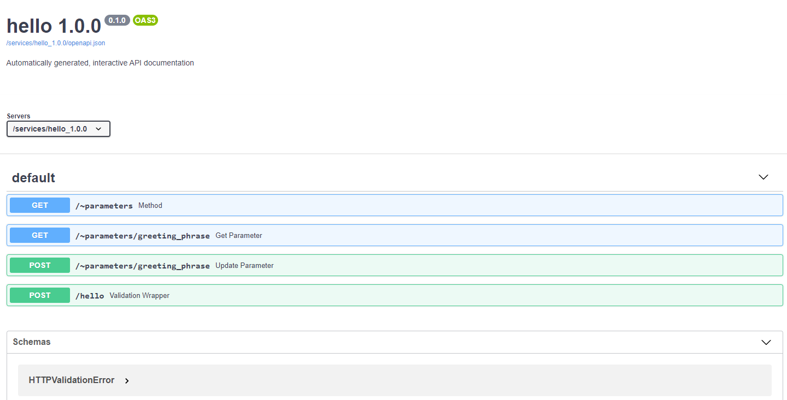

API Autodocs¶
MVI automatically creates interactive documentation for every service created using the Software Development Kit. It can be found at http://your-host/services/servicename_version/docs. For the hello service we created in Creating Your Own service it can be reached at http://your-host/services/hello_1.0.0/docs and looks like this:
(click image to enlarge)
{kind=link}
Interacting with the Docs¶
Each endpoint function in the documentation can be clicked to get more information
about the data it expects and an example of a successful response and more. Let’s try
the hello/ function. Try it once with your name and once with “World”. With your
name it should return “Hello <name>” and for “World” you should get “Greeting failed”.
We expect to have gotten a notification, because in the code we wanted to raise a notification if a user tried to greet the world, because of time constraints. So head over to http://your-host/dashboard/ and click the notifications tab. And we will see the notification there.
What’s Next?¶
Now you have seen how to inspect and test a deployed service without having to write any code. The usefulness of the documentation can be increased with smart usage of type hints and the pydantic package. Take a look at Typing in the SDK to learn more. Or continue to Versioning and Shadow Deployment to learn more on how to test and switch between different versions of services without downtime.